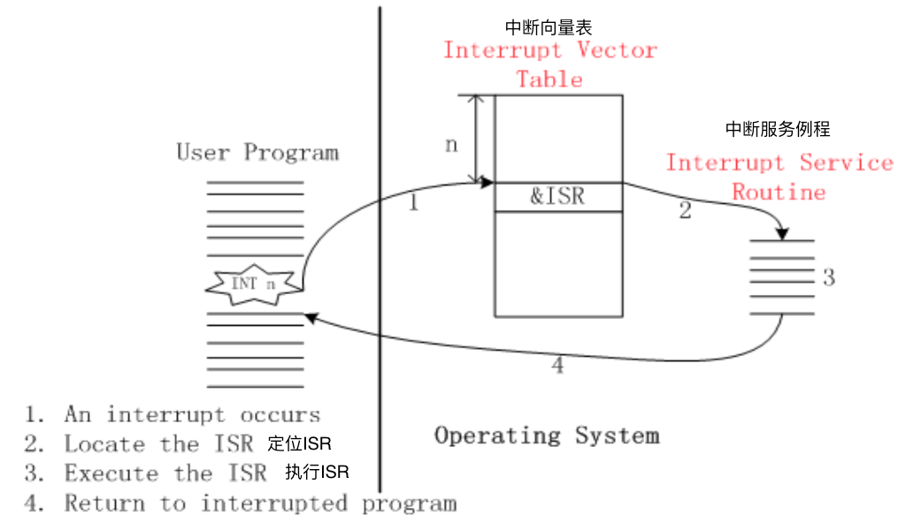
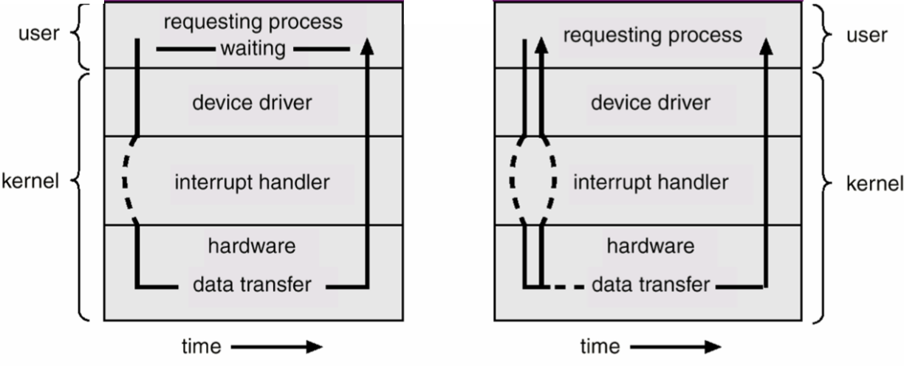
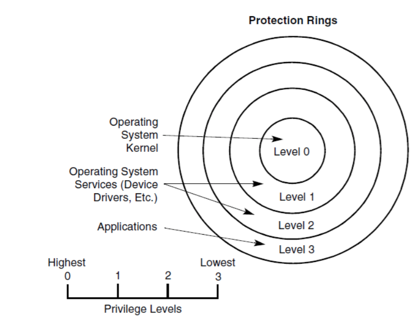
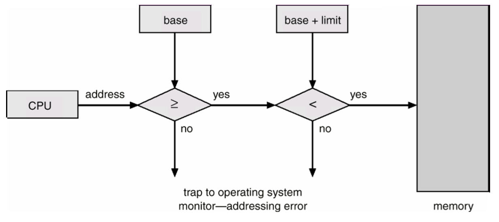
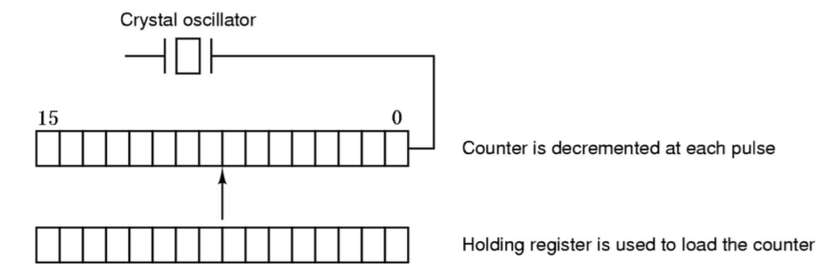
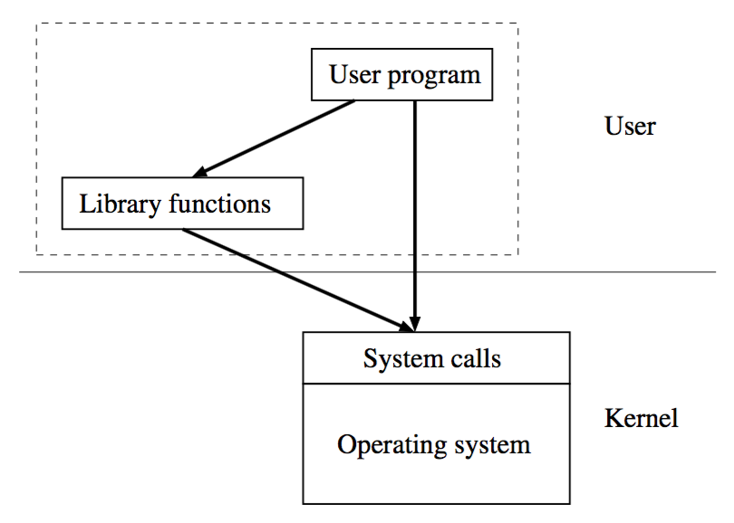
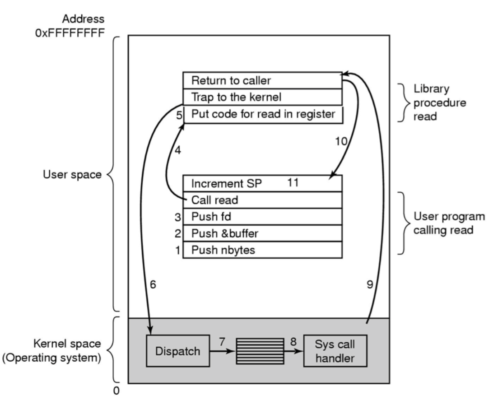
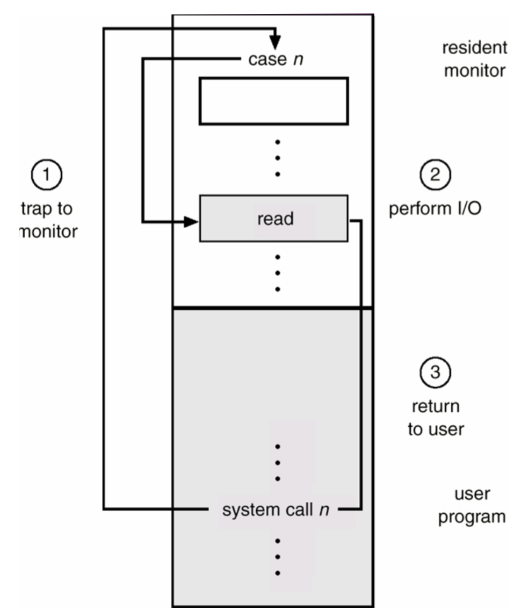

操作系统笔记02 计算机系统结构
Bootstrap 引导
- 我们必须将操作系统内核从某些永久性存储（如磁盘和网络服务器）加载到内存中。装入内核以启动计算机的过程称为引导系统。
- 绝大多数计算机系统都有一小块代码，称为引导程序/引导装载程序。这段代码能定位内核，将它装入内存，开始执行。
- 引导加载程序不是操作系统的一部分。引导程序被存储在固件中，而操作系统保存在磁盘上。
- 例子：
- NTLDR: 用于Windows NT / XP的boot-loader（驻留在C:\）。
- GRUB: Unix / Linux的启动加载器之一。
中断
- 现代计算机和操作系统是由中断驱动的。
- 外围设备使用**中断信号通知CPU发生了某些事情。
- 当CPU发生中断时，它必须通过硬件、ISR中的汇编语言程序和C程序来服务中断：
- 硬件：将一些寄存器和分支保存到**
中断服务程序（ISR**）; - ISR中的汇编语言程序：必要时保存其余寄存器营造便利的环境;
- ISR中的C语言程序：确实服务于中断，通常读取并缓冲来自外围设备的输入数据;
- ISR中的C语言程序：返回在ISR中的汇编语言;
- ISR中的汇编语言程序：恢复保存的寄存器并返回到被中断的位置。
中断向量
- 通常，计算机系统具有多个外围设备。发生中断时，CPU必须知道哪个设备触发了它。
- 中断向量（Interrupt vector）是中断服务程序的入口地址，或中断向量表的下标，中断服务程序的入口地址存放在该数组中。
- 计算机系统为每个设备分配一个唯一的**
中断请求号（例如，一个8-bit整数），简称IRQ**。 - 中断向量表中存有所有ISR的地址。它是一个地址的数组。
- 在服务中断时，CPU使用IRQ(中断请求号)来索引中断向量，以获取ISR的地址并跳转到它。 
中断vs异常
中断：异步，由外围设备触发异常：同步，处理器在执行指令时检测到错误情况（例如除零和无效内存访问）时会发生异常。- 除上述以外，处理中断和异常是相同的。异常也称为软件生成的中断或同步中断。
I/O结构
- 当CPU使用外围设备进行 I/O 时，有两种方法可用：
- 同步 I/O ：I/O 操作开始，等待 I/O 操作完成时将控制返回给用户进程。
- 异步 I/O ：并不等待输入输出结束，而是直接将控制返回给用户程序。 
- (外围)设备控制器中的寄存器被称为 I/O 端口
- 一个唯一的地址（称为端口，一个8/16-bit整数）被分配给设备控制器中的每一个寄存器。
- 特殊的 I/O 指令旨在允许这些寄存器和内存之间的数据传输。
- 例如：IBM-PC
- 16位 I/O 端口用于寻址设备控制器的寄存器。
- 两个特殊的 I/O 指令：IN和OUT包含在INTEL x86 CPU中。
1.IN reg，端口 - 从端口读取一个字节/字到CPU寄存器寄存器
2.OUT端口，reg - 将CPU寄存器的内容写入端口。
内存映射 I/O
在 I/O 端口的方法中，我们可以将 I/O 端口视为另一个单独的地址空间，与存储器地址空间无关。
设备控制器内的寄存器只是一个存储器。
为什么不使用与内存相同的方法访问这些寄存器？
在这种情况下，（唯一的）内存地址被分配给每个寄存器，而不是一个端口地址。
内存映射 I/O 。
内存映射 I/O 使用相同的总线来寻址内存和I / O设备
为了容纳 I/O 设备，CPU可寻址空间的区域必须为 I/O 而不是内存预留。
优点
每个可以引用内存的指令也可以引用设备控制器寄存器。（设备驱动程序可以完全用C语言编写。）
不需要特殊的保护机制来保持用户进程不执行 I/O 。
缺点
现在大多数电脑都有某种形式的缓存记忆词。但是，缓存**
设备控制器寄存器**将会产生灾难性的后果。现代计算机系统使用它们两个：
用于数据缓存的存储器映射 I/O 和用于命令寄存器的单独 I/O 端口，
就像Mobility Radeon 7500的例子一样。
硬件保护
- 为确保正常运行，我们必须保护操作系统和所有其他程序及其数据免受任何故障程序的影响。
- 不同的硬件保护方式：
- 双模式操作：防止用户程序占用部分操作系统，并使用它覆盖其他程序，甚至修改操作系统本身。
- 特权指令：防止用户程序通过发出非法 I/O 指令而中断系统的正常操作。
- 内存保护：防止用户程序直接访问其他用户程序或操作系统的内存。
- CPU保护：防止用户程序陷入无限循环，并且永远不会将控制权交还给操作系统。
1. 双模式操作
- 用户模式：代表用户程序执行。
- 监控模式：代表操作系统执行。也称为管理员/系统/特权或内核模式。
- **
模式位**被添加到计算机硬件以指示当前模式：监视器（0）或用户（1）。 - 在系统启动时被设置为监视模式，然后加载操作系统，以用户模式启动用户程序。
- 当发生中断或异常时硬件切换到监视模式。
- 只要操作系统获得对计算机的控制权，就处于监视模式。
- 系统总是在将控制权交给用户程序前切换到用户模式。
- INTEL IA-32支持4种工作模式，命名为保护环。
- 但是，运行在IA-32上的大多数操作系统只使用4个中的2个。环0为监视模式，环3为用户模式。 
2. 特权指令
- 所有 I/O 指令都是特权指令。
- 硬件允许特权指令仅在监视器模式下执行。
- 如果这些指令在用户模式下执行，硬件不会执行指令，而是将其视为非法并生成异常。
- eg. IN和OUT是INTEL IA-32中的2条特权指令。
- 必须确保用户程序无法在监视模式下获得对计算机的控制权。
- 转移到用户模式操作，定时器管理，中断管理…
3. 内存保护
- 为了保护内存，用两个寄存器来确定程序可以访问的合法地址的范围：
- 基地址寄存器：保存最小的合法物理内存地址
- 界限地址寄存器：保存地址范围的大小。
- 见内存管理章节
4. CPU保护
- 操作系统只有在有机会运行时才能执行一种策略。
- 如果用户程序陷入死循环或不调用系统服务，并不将控制权返回到操作系统，则CPU不受操作系统的控制。
- 定时器：在给定的时间段后中断CPU，控制权自动交给操作系统以确保操作系统能维持对CPU的控制。
- 发生中断时，操作系统将通过ISR获得控制权。
定时器
- 计数寄存器每经过一个时间周期，都要递减(减1)。
- 当计数器寄存器达到0时，定时器将中断CPU。
- 然后，计数器寄存器将重新加载
保持寄存器的值并重复递减的步骤。 - 示例：IBM-PC中的计时器
- 具有16位计数器和保持寄存器和脉冲的INTEL i8253可编程间隔定时器达到1193182Hz。 
系统调用
- 操作系统本身没有任何用处，但它通过系统调用用户程序提供了一些有用的服务。如，从磁盘读取文件并通过网络适配器将数据发送到远程主机。
- 系统调用：操作系统和用户程序之间的（明确定义的）接口。
- 用户程序只能通过系统调用请求操作系统提供的服务。
- 系统调用接口因操作系统而异，也称为主管电话。
系统调用v.s.库函数
- 系统调用会陷入OS内核;而库函数没有。所以，系统调用比库函数慢得多。
- 库函数与用户定义的函数相同。用户可以用自己的版本替换现有的库函数，而系统调用则不能替换。
- 一个操作系统中的系统调用可能会成为另一个操作系统中的库函数，反之亦然。 
进程
- 1 - 3 准备参数；
- 4 调用系统调用的包装器（用汇编语言编写）；
- 5 将读取的系统调用号存储到寄存器中；
- 6 陷入操作系统；
- 7 通过使用系统调用号索引系统调用表获取系统调用服务程序以进行读取；
- 8 - 11 系统调用服务程序运行，并在完成时返回到用户程序。
- 这里的驻留监视器（或简单的监视器）意味着操作系统
- n是系统调用号。
陷入操作系统
- 用户程序不能直接陷入操作系统。如何陷入操作系统？
- 方法1：异常（软件生成的中断）
- INTEL IA-32提供触发异常的指令INT。eg. Linux / FreeBSD使用INT 0x80陷入操作系统，Windows NT / XP使用INT 0x2e。
- 方法2：特殊指令。
- 由于INT指令的额外开销，INTEL IA-32提供了两个特殊指令来陷入操作系统：
SYSENTER和SYSEXIT。仅在Pentium II之后的处理器上支持，即Family 6，Model 3，Stepping 3。 - ARM处理器使用swi (Short for SoftWare Interrupt) 陷入操作系统。
All articles in this blog are licensed under CC BY-NC-SA 4.0 unless stating additionally.